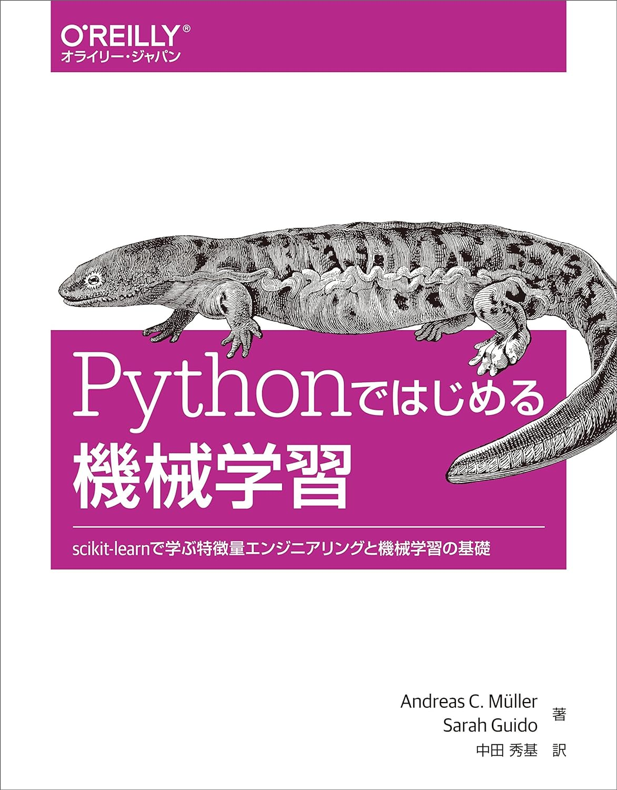

機械学習
機械学習のおすすめ参考書です。
機械学習入門 ボルツマン機械学習から深層学習まで 大関真之著
会話形式で進む機械学習のわかりやすい入門書。数式がほぼ現れず、こんなに可愛い表紙なのにかなり深いところまで進みます。ちなみにこの本の書評をバーチャルリアリティ学会に寄稿したことがあります。それぐらい好き。

Pythonではじめる機械学習
実際にコードを書いてみたい！という人には圧倒的におすすめ。サンプルコードが豊富なので、ひたすら意味を理解しながら写経しましょう。写経写経写経写経写経写経写経写経写経。
人工知能はどのようにして「名人」を超えたのか？ 山本一成 著
ポナンザという最強将棋AIの開発者である山本一成さんが著者。将棋、囲碁、チェスなどを通して機械学習・深層学習・強化学習の本質が学べる良著。ストーリーがあるので飽きにくく、機械学習の勉強モチベが爆上がりすること間違いなし。